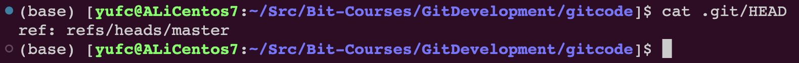
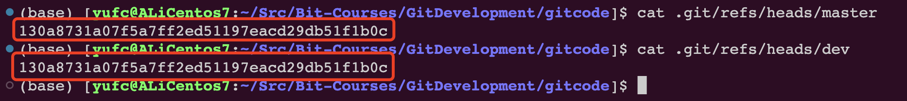
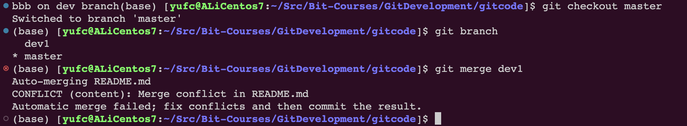
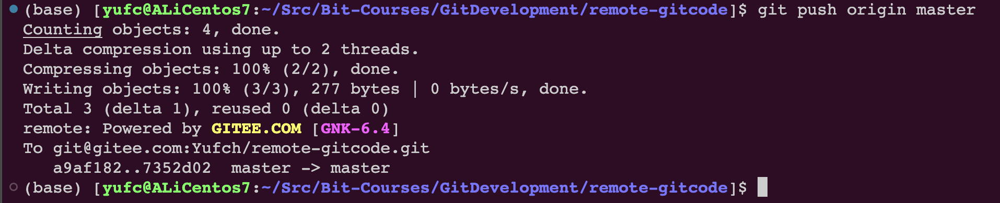
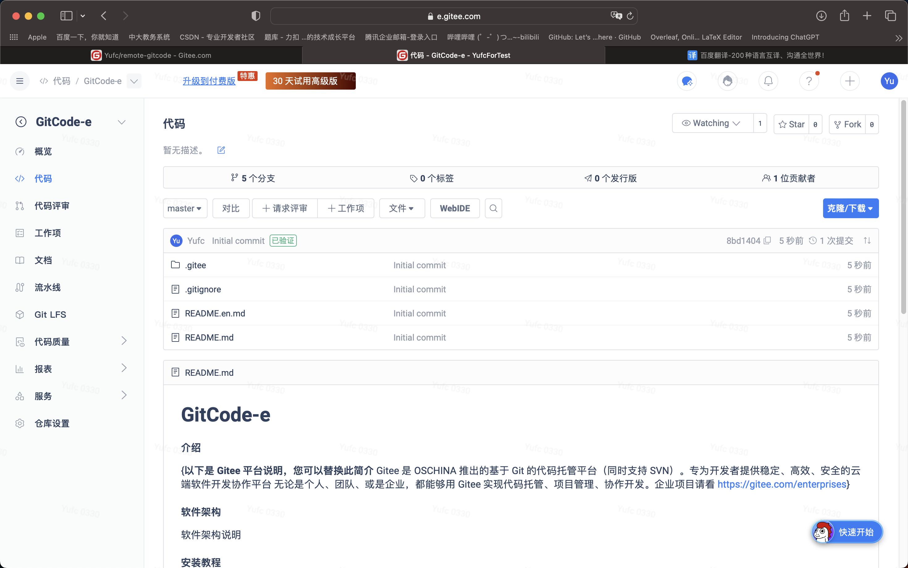

Git企业开发控制理论和实操-从入门到深入
前言
作者：背包
作者Github地址：https://github.com/ffengc
为什么需要Git
开发中有什么问题
不知道你工作或学习时，有没有遇到这样的情况:我们在编写各种文档时，为了防止文档丢失，更改失误，失误后能恢复到原来的版本，不得不复制出一个副本，比如:
报告-v1
报告-V2
报告-V3
报告-确定版
报告-最终版
报告-究极进化版
每个版本有各自的内容，但最终会只有一份报告需要被我们使用。
随着版本的不断增多，维护好版本是很有挑战的！
各自版本修改的内容是什么我们还知道吗？？
所以就需要版本控制！
版本控制器
记录每次的修改以及版本迭代的一个管理系统。Git就是一个目前主流的版本控制器。
Git的安装
Centos
sudo yum -y install gitUbantu
xxxxxxxxxxsudo apt install gitWindows
参考视频：
https://www.bilibili.com/video/BV1hf4y1W7yT/?p=3&vd_source=b57c3f3e8a7507d4af7322c28f05fdbc
Git的基本操作
创建本地仓库
命令：git init
创建好之后会多一个 .git 目录，里面是什么我们先不管，后面再说。
不要手动修改里面的任何内容！
配置本地仓库
一进去之后首先要配置的两个东西，是一定要配置的
name
email
如果不配置在后续就会有一系列的问题。
配置使用 git config 命令
xxxxxxxxxxgit config user.name "xxx"git config user.email "xxx"检查是否配置好了：
xxxxxxxxxxgit config -l # 检查config中的所有配置删除配置：
比如删除名字
xxxxxxxxxxgit config --unset user.name全局设置：
表示可以在当前机器下的所有仓库中都生效。
xxxxxxxxxxgit config --global user.name "xxx" # 全局设置git confit --global --unset user.name # 全局重置认识工作区、暂存区、版本库
现在，请问这个git仓库可以管理这个README.md吗？
答案是还不可以。因为本质上.git才是仓库，外面不是。
但是.git是绝对不允许手动修改的。
其实.git里面叫做版本库（仓库），外面叫做工作区。
那么怎么样才能让README.md被管理呢？要进行一些操作。
这张图的工作区，就是README.md所在的地方。
stage可以称作暂存区/索引，即/index
HEAD是一个指针，只想master，这个概念我们到后面再理解。
添加文件
git add
本质是添加到stage中！
命令:
xxxxxxxxxxgit add # 后面跟上文件名git add . # 添加当前所有问题git add file.log test.txt # 添加指定文件git commit
xxxxxxxxxxgit commit -m "add my first file" # 这里不要乱写，这里写的是提交的细节，对后续维护很重要git log
xxxxxxxxxxgit log可以打印从近到远的所有提交记录。
这个是经过哈希计算出来的，很大的数字。
xxxxxxxxxxgit log --pretty=oneline # 这样可以打印的漂亮一点学会看懂.git目录里的文件
我们可以看看完成了一系列操作后的目录结构，如下所示。
x(base) [yufc@ALiCentos7:~/Src/Bit-Courses/GitDevelopment/gitcode]$ tree .git.git├── branches├── COMMIT_EDITMSG├── config├── description├── HEAD├── hooks│ ├── applypatch-msg.sample│ ├── commit-msg.sample│ ├── post-update.sample│ ├── pre-applypatch.sample│ ├── pre-commit.sample│ ├── prepare-commit-msg.sample│ ├── pre-push.sample│ ├── pre-rebase.sample│ └── update.sample├── index├── info│ └── exclude├── logs│ ├── HEAD│ └── refs│ └── heads│ └── master├── objects│ ├── 0d│ │ └── f05318450b3455603cd0b0fc2cb4f4c8faa366│ ├── 86│ │ └── 5a7036c778b72e201a13e65b37bc35cbd83ade│ ├── 8d│ │ └── 9ba68bb8b2dfea545ec559b43f9f08d4d362c0│ ├── d3│ │ └── b98d1ce30bb03f3140dee28718bbdf08579543│ ├── e6│ │ └── 9de29bb2d1d6434b8b29ae775ad8c2e48c5391│ ├── f4│ │ └── 2df147c60543792b9b56e1118f11409d55e87a│ ├── info│ └── pack└── refs ├── heads │ └── master └── tags
18 directories, 24 files我们在刚才说了，add之后东西会被放到暂存区里面去：/index
暂存区 /index
然后我们可以在目录结构中找到这个index了。
add之后的内容就会放到index里面去的！
HEAD指针
我们还要看HEAD，刚才说了HEAD是一个指针，指向master。
就是指向master的
master
可以发现，master就是最新的一次提交的commit id
我们刚才说了，master里面存放的都是对象object的索引，可以把commit id理解成一个对象
object对象
那么如何查看object对象里面的具体内容呢？
首先要把上面的 commit id 分成两部分来看。
前两位，也就是f4表示文件夹的名称，后面表示文件名，如图所示。
但是现在查看不能直接cat了，要用一个特殊的命令
xxxxxxxxxxgit cat-file -p [commit id]最新的一次提交的描述信息，就写在这里。
学到这里，我们可以输出一个结论：Git追踪管理的其实就是修改，而不是文件！
修改文件
git status命令
先介绍一个命令，用于查看仓库的状态。
xxxxxxxxxxgit status我刚才在我的README.md里面新增了一行，然后git statues 告诉我：
Changes not staged for commit ：暂存区中没有要修改的内容
修改的内容在工作区的README.md中
git diff命令
xxxxxxxxxxgit diff README.md即：找出工作区和暂存区中README.md文件的差异。打印格式是Unix常用的diff格式。
修改后
我们git add .一下之后，再git status试一下
提交看看。
版本回退
回退操作
重点命令：
xxxxxxxxxxgit reset [--soft | --mixed | --hard] [HEAD]直接上例子。
我们的README.md其实是有两个版本的，一个是一开始的版本，一个是添加一行后的版本。
git reset本质是回退版本库中的内容。
--soft | --mixed | --hard |
|---|---|---|
| 只回退版本库中的内容，工作区和暂存区不变 | 版本库+暂存区回退，工作区不变 | 回退所有区域中的内容 |
默认使用--mixed选项。
--hard慎用，因为如果我正在工作区进行开发，但是调用了--hard的回退，工作区的内容就直接丢失了。
在操作直线先看看日志。
调用git reset
回退之后，在add my first file这一次修改之后的所有修改，都会直接被回退。
如果后续需要撤销修改：也是执行git reset命令。
如果你的bash还没clear，还是能看到刚才的commit id
那直接调用git reset也是可以撤销的。
那如果你屏幕clear了呢？也是可以撤销的。
xxxxxxxxxxgit reflog # 它可以看到本地每一次的提交命令前面那些短的数字和字母，其实就是 commit id 的一部分。用这一部分也是可以回退的。
回退本质
本质就是一个指针动来动去而已。
撤销修改
如果我们在工作区在一个版本基础上继续开发，但是越写越觉得自己的代码是垃圾，写不下去了，想直接回到修改前的版本。
首先是有三个场景：
只在工作区中改了
add了但没有commit
commit了
情况一：仅在工作区中进行了修改
xxxxxxxxxxgit checkout -- README.md这个命令可以让文件撤销到上一次add时候的状态。
注意：命令中的--是很重要的，如果不加--，命令是另外一个含义。
情况二：add了但没有commit
先把准备工作做一下，把工作区和暂存区的弄成一致的先。
利用git reset就行
xxxxxxxxxxgit reset --hard ... # 这个命令也可以回退到和当前版本库内容一致的版本下，即版本库啥样就回退到啥样git reset --hard HEAD # 表示回退到当前版本git reset --hard HEAD^ # 表示回退到上一个版本git reset --hard HEAD^^ # 表示回退到上两个版本，以此类推# 当然这里面reset的选项可以自己选情况三：已经commit
同样可以利用git reset命令。
那么我们知道HEAD是当前版本，HEAD^是上一个版本，所以情况三也是很好解决的。
xxxxxxxxxxgit reset --hard HEAD^ # 三个区都回退到三个版本注意：情况三有一个大的前提条件，即：commit之后没有push操作。
至于什么是push操作后续才会讲解。
为什么要有这个前提呢，不是说push了我们的代码就改不了，而是说，在企业中，跑的代码是远程仓库中的代码，不是我本地的代码。
撤销的目的：就是不影响远程仓库的代码。
删除文件
方法一
在工作区rm之后，add和commit就行了。
方法二
使用git提供的命令。
xxxxxxxxxxgit rm file1这个命令可以帮我们做两件事:
删除工作区中的
file1删除暂存区中的
file1
因此我们再git commit一下就能完成删除了。
Git的分支管理
我们继续在上一章创建的本地仓库中继续进行分支的学习。
分支创建、切换、合并的简单尝试
xxxxxxxxxxgit branch # 查看本地有哪些分支前面的*是什么？
我们前面说到，HEAD一开始是指向master的，但HEAD不是只能指向master的，而是可以指向其他分支。
然后被HEAD指向的分支才是工作分支。
如何创建一个本地的分支呢？
xxxxxxxxxxgit branch dev # 创建一个名为dev的分支发现多了一个dev
但此时HEAD还是指向master的。我们打印一下HEAD就能看到。

同样，tree一下.git/也可以看到新建的dev
此时我们可以把dev和master的内容都打印一下。

我们知道master里面是上一次提交的commit id，我们发现dev里面也是。所以现在分支的状态如下图所示。
两个“指针”，都指向最新的提交，HEAD指向master。
然后现在我想在dev分支上进行操作，我们就要让HEAD指针指向dev，而不是master。
xxxxxxxxxxgit checkout dev通过这个命令可以把HEAD指向dev分支，让dev成为工作分支。
现在的工作分支就是dev了。
现在我们对README.md文件进行一下修改。
然后提交。
此时的README.md(dev分支上的)是有hello branch的。
我们切换回master分支，再看看README.md长啥样。
我们发现是没有hello branch的！
因为我们刚才的修改，在dev分支上。
刚才的这几个步骤的图示如下。
现在我们想要在master上也拿到dev上的代码，那就要合并！
注意：现在是想要在master上获得dev的分支，就是dev合并到master中，注意表达和顺序，是反过来是不一样的。
首先先要checkout到master上来。
xxxxxxxxxxgit checkout master然后使用合并命令。
xxxxxxxxxxgit merge dev # 合并我们看到这里面的Fast-forward表示快速提交。本质上就是把master的指针改一下就行了，所以是很快的。
到后面我们会讲不是Fast-forward的情况。
流程就是这个样子的。
当然，在这过程中还会存在很多的问题，我们在后面再一一解释。
删除分支
我们在上一小节，创建了dev分支，然后做一些修改，然后合并了。
意味着dev分支的使命已经结束了。我们就要删除dev分支。
xxxxxxxxxxgit branch -d dev注意：
只能在其他分支上删除分支，也就是说我们不能在
dev上删除dev分支，否则会报错。
为什么需要分支
因为创建、合并和删除分支非常快，所以Git鼓励你使用分支完成某个任务，合并后再删掉分支，这和直接在master分支上工作效果是一样的，但过程更安全。
合并冲突
合并的时候是最容易出现问题的。
比如说现在有一个README.md文件，创建dev分支后，多加了一行：bbb on dev branch
master也没闲着，也多加了一行：ccc on dev branch
那git是不知道在合并的时候保留bbb的这一行还是保留ccc的这一行的。
这种情况叫做合并冲突。
我们先把上述的情况准备好。
其实有一行命令，可以同时做到：创建分支+checkout到这个新创建的分支上。
xxxxxxxxxxgit checkout -b dev1 # 创建dev1分支，并切换到dev1分支下此时的状态就是这样的。
此时merge就会发生冲突，我们来试一下。

合并失败。
此时，git帮我们修改了一下代码，如图所示，把HEAD和dev1中的都放在一起了。
然后刚才的冲突提示是：Automatic merge failed; fix conflicts and then commit the result.
因此就是让我们自己手动改一下，然后重新提交。
所以现在我们选择保留bbb那一行，直接删掉其他代码就行了。
重新提交后即可，此时仓库的状态是这样的。
注意：因为是
master去merge了dev，所以master此时是最新的提交，也就是我们fix冲突后的提交，但是此时dev依旧还是刚才dev的提交。
其实 git log 可以帮我们画这些图，画给我们看。
xxxxxxxxxxgit log --graph --abbrev-commit效果如下所示：
xxxxxxxxxx(base) [yufc@ALiCentos7:~/Src/Bit-Courses/GitDevelopment/gitcode]$ git log --graph --abbrev-commit* commit ce635d4|\ Merge: c007412 fd4e0b0| | Author: Yufccode <xxx@qq.com>| | Date: Wed Aug 23 22:51:22 2023 +0800| | | | fix conflict| | | * commit fd4e0b0| | Author: Yufccode <xxx@qq.com>| | Date: Wed Aug 23 22:42:45 2023 +0800| | | | bbb on dev1| | * | commit c007412|/ Author: Yufccode <xxx@qq.com>| Date: Wed Aug 23 22:42:03 2023 +0800| | ccc on master| * commit 48cc733| Author: Yufccode <xxx@qq.com>| Date: Tue Aug 22 23:27:07 2023 +0800| | modify readme:...skipping...* commit ce635d4|\ Merge: c007412 fd4e0b0| | Author: Yufccode <xxx@qq.com>| | Date: Wed Aug 23 22:51:22 2023 +0800| | | | fix conflict| | | * commit fd4e0b0| | Author: Yufccode <xxx@qq.com>| | Date: Wed Aug 23 22:42:45 2023 +0800| | | | bbb on dev1| | * | commit c007412|/ Author: Yufccode <xxx@qq.com>| Date: Wed Aug 23 22:42:03 2023 +0800| | ccc on master| * commit 48cc733| Author: Yufccode <xxx@qq.com>| Date: Tue Aug 22 23:27:07 2023 +0800| | modify readme| * commit 130a873| Author: Yufccode <xxx@qq.com>| Date: Mon Aug 21 23:04:55 2023 +0800| | modify README.md| * commit f42df14:...skipping...* commit ce635d4|\ Merge: c007412 fd4e0b0| | Author: Yufccode <xxx@qq.com>| | Date: Wed Aug 23 22:51:22 2023 +0800| | | | fix conflict| | | * commit fd4e0b0| | Author: Yufccode <xxx@qq.com>| | Date: Wed Aug 23 22:42:45 2023 +0800| | | | bbb on dev1| | * | commit c007412|/ Author: Yufccode <xxx@qq.com>| Date: Wed Aug 23 22:42:03 2023 +0800| | ccc on master| * commit 48cc733| Author: Yufccode <xxx@qq.com>| Date: Tue Aug 22 23:27:07 2023 +0800| | modify readme| * commit 130a873| Author: Yufccode <xxx@qq.com>| Date: Mon Aug 21 23:04:55 2023 +0800| | modify README.md| * commit f42df14| Author: Yufccode <xxx@qq.com>| Date: Mon Aug 21 12:26:23 2023 +0800| | my second add| :最上面的就是最新我们的操作。
合并模式
其实在这一章节里面，我们的实验有两次merge，分别对应了两种合并模式。
第一种其实就是：
Fast-forward模式，前面讲过的。第二种就是第二次我们merge，需要解决冲突，称为：
no-ff模式
在Fast forward模式下，删除分支后，查看分支历史时，会丢掉分支信息，看不出来最新提交到底是merge进来的还是正常提交的。
但在合并冲突部分，我们也看到通过解决冲突问题，会再进行一次新的提交。
no-ff模式，这样的好处是，从分支历史上就可以看出分支信息。例如我们现在已经删除了在合并冲突部分创建的 dev1 分支，但依旧能看到 master 其实是由其他分支合并得到。
Git允许我们禁用Fast-forward模式。
xxxxxxxxxxgit merge --no-ff -m "merge dev2" dev # 禁用ff模式进行merge, 因为no-ff模式需要再次进行提交，所以要-m带上提交的信息分支策略
首先，master分支应该是非常稳定的，也就是仅用来发布新版本，平时不能在上面干活。
那在哪干活呢? 干活都在dev分支上，也就是说，dev分支是不稳定的，到某个时候，比如1.0版本发布时，再把dev分支合并到master上，在master分支发布1.0版本;你和你的小伙伴们每个人都在dev分支上干活，每个人都有自己的分支，时不时地往dev分支上合并就可以了。
所以，团队合作的分支看起来就像这样：
因此，Git的分支功能是非常重要的！！！
BUG分支
如果master上有bug呢？
想象一种场景：master正在运行，然后dev2分支正在做开发，但是还没有提交，此时master突然出现bug了。
我们先模拟一下这种场景。
此时我们dev2分支上正在开发，然后此时master遇到了bug。
能不能在dev2分支上处理bug呢？肯定是不行的，因为dev2分支是用来开发某个功能的。
那好，现在我们就要切回去master上去处理，但是此时我dev2上还没提交，所以切过去处理我工作区的东西就不见了。所以需要一个命令，先把dev2上工作区的内容先保存一下先，然后再到master上去操作。
xxxxxxxxxxgit stash # 暂时保存工作区的内容，注意：要保存dev2的内容，HEAD就要在dev2上其实是保存到这里来了。
注意：git stash命令只能暂存已经被git管理的文件，因为README.md已经被git管理了，所以可以用git stash暂存。但是如果你说现在touch一个new_file让git stash去暂存是不行的。
此时我们就要checkout到master上去处理bug了。
然后创建一个bug分支。
然后去修复bug。
此时的状态就是，在fix_bug分支上，bug已经被修复了，master上还是bug，然后dev2在做某项开发。
此时就要让master上的bug也被修复，就是合并一下fix_bug分支。
此时我们的bug修复完了
此时我们要切回dev2分支继续进行开发。
此时我们工作区的内容在stash里面，所以先把stash的东西放出来先。
xxxxxxxxxxgit stash list # 这个命令可以显示stash里面有哪些内容xxxxxxxxxxgit stash pop # 把stash里面的内容放出来，恢复到工作区中但是此时dev2分支还是处于一个bug未修复的状态的，不过没关系，master已经修复了。
继续对dev2进行开发。
提交一下。
此时仓库的状态是这样的。
此时如果合并，可能会出现问题。
如果我们合并，我们就要手动解决冲突，如果手动改代码，就有可能会改出master的bug，怎么办？
所以此时我们一般这么办。
让
dev2去合并master，而不是master合并dev2，然后在本地测试dev2，把所有问题排除。然后让
master去合并dev2，此时这次合并就不需要解决冲突了！
这种处理方式，才是正确的处理方式！
我们现在就来模拟这个过程。
这个就是整套流程！
这就是工作中开发中比较好的流程！
强制删除分支
设想开发中的一个场景：
产品经理：你给我新增一个功能
我：好。我现在开始做
然后我就拉了一个dev分支开始做这个功能
开发到一半
产品经理：算了，这个功能取消了。
我：... 好的。
那我就只能删除这个dev分支。
我们之前学的git branch -d是merge之后删，git是允许我们删的。
但是现在我在dev分支上做了若干commit了，git是会保护我们的分支的，不让删。
此时要用强制删除命令：
xxxxxxxxxxgit branch -D dev # 把-d改成-D就是强制删除，当然还是要记得切到master上才能删devGit的远程操作
博主使用码云（Gitee）进行讲解，操作方法和Github完全一样。
理解分布式版本控制系统
我们目前所说的所有内容(工作区，暂存区，版本库等等)，都是在本地!也就是在你的笔记本或者计算机上。而我们的 Git 其实是分布式版本控制系统！什么意思呢? 可以简单理解为，我们每个人的电脑上都是一个完整的版本库，这样你工作的时候，就不需要联网了，因为版本库就在你自己的电脑上。既然每个人电脑上都有一个完整的版本库，那多个人如何协作呢?比方说你在自己电脑上改了文件A，你的同事也在他的电脑上改了文件A，这时，你们俩之间只需把各自的修改推送给对方，就可以互相看到对方的修改了。
分布式版本控制系统通常也有一台充当“中央服务器”的电脑，但这个服务器的作用仅仅是用来方便“交换”大家的修改，没有它大家也一样干活，只是交换修改不方便而已。有了这个“中央服务器”的电脑，这样就不怕本地出现问题导致文件丢失了。
中央仓库我们叫“远程仓库”，有个很牛的网站叫做Github就是中央仓库的一个作用！
当然我这篇文章的读者可能有部分伙伴访问国外网站比较慢，这里博主会用国内的一个替代网站，叫做码云来进行演示。
创建远程仓库
在Gitee上新建仓库
简单理解issues和pull request

Gitee这个平台，为我们提供了四种管理者的身份。
远程仓库是由自己的成员的。
这个issues就是一些有问题的人和仓库成员交流的一个地方。
pull request是什么呢？
首先对于开发者来说，肯定不是在master上进行开发的，我们可能是在dev分支上开发，然后我们就要进行merge操作。
当然，我们知道merge操作是有风险的。因此我们不能随随便便让人来merge。
因此，想要进行merge的开发人，就要写一个PR(pull request)，可以理解成“合并申请单”，让仓库管理人看。
管理员同意后，我们才能进行merge操作。

克隆远程仓库
这些都是Gitee给我们提供的数据传输协议，常用的就是https和ssh。
HTTPS协议clone
使用这里给的网址，复制，然后使用 git clone 命令。
xxxxxxxxxxgit clone https://gitee.com/Yufch/remote-gitcode.git注意：不能在任何本地仓库下执行这个命令。
这个就是远程仓库下有的东西了。用法和之前讲的完全一样。
xxxxxxxxxxgit remote -v # 查看远程仓库的一些信息xxxxxxxxxx(base) [yufc@ALiCentos7:~/Src/Bit-Courses/GitDevelopment/remote-gitcode]$ git remote -vorigin https://gitee.com/Yufch/remote-gitcode.git (fetch)origin https://gitee.com/Yufch/remote-gitcode.git (push)(base) [yufc@ALiCentos7:~/Src/Bit-Courses/GitDevelopment/remote-gitcode]$ 表示我们是有远程仓库的fetch权限（拉权限），和push权限（推权限）。
SSH协议clone
ssh协议是采用一个公钥加密和公钥登陆的一个机制。所以我们必须要把自己本地服务器的一个公钥放到git服务器上进行管理。
我们现在还没有配置公钥。
第一步：创建SSH Key。在用户主目录下，看看有没有.ssh目录，如果有，再看看这个目录下有没有id_rsa和 id_rsa.pub 这两个文件，如果已经有了，可直接跳到下一步。如果没有，需要创建SSH Key。
xxxxxxxxxxls -al ~ | grep .ssh # 可以搜索一下~下有没有.ssh文件夹，如果没有就要创建SSH Key这个命令就是系统的知识了，这里不过多讲解。
设置ssh公钥需要配置邮箱，然后这个邮箱要和码云上的一致。这里可以看。
然后配置SSH公钥命令如下。
xxxxxxxxxxssh-keygen -t rsa -C "xxx.com"xxxxxxxxxx(base) [yufc@ALiCentos7:~]$ ssh-keygen -t rsa -C "yufc779@gmail.com"Generating public/private rsa key pair.Enter file in which to save the key (/home/yufc/.ssh/id_rsa): Created directory '/home/yufc/.ssh'.Enter passphrase (empty for no passphrase): Enter same passphrase again: Your identification has been saved in /home/yufc/.ssh/id_rsa.Your public key has been saved in /home/yufc/.ssh/id_rsa.pub.The key fingerprint is:SHA256:1PWuf6UgtkssYGh2x5QasdfaSrD4YmS7EL0Yf7VamusiQ yufc779@gmail.comThe key's randomart image is:+---[RSA 2048]----+| .+.. . || . + . o + . . ||..o o o * . . || .o+ o * . ||oo+ B * S . ||o+.= B o .o .. .||E.. . o ..oo.. ..|| o. . o. .. .|| .o. .. .. |+----[SHA256]-----+(base) [yufc@ALiCentos7:~]$ 后面的东西全部默认回车即可。
xxxxxxxxxx(base) [yufc@ALiCentos7:~/.ssh]$ cat id_rsa.pubssh-rsa AAAAB3NzaasdasdfadSMIpxADoRltTaMiJadsfasdflBld/qF7EHq+KwJY4CMhb65A6tsvGPxAPAeYNgufjc4LC5r0v2hdgs0Pk86XIX7vUK6DUrpe6LPTBOdAGTsWmSbcynpJhX97mdM0P2p/3HK0KYmlymyAIzPpEyNF5YRF9goDzI6OBw7Y9WZlp0QWPyWRbnSMOe4olXKY7EFcon5uCrlD3vJNac/3ZIZpKy2TrtvPvcm1fk9sJW5JlcC7P6DByL0CG8ohxGwz2/4l yufc779@gmail.com(base) [yufc@ALiCentos7:~/.ssh]$这个东西就是你的公钥。弄到码云上即可。
此时就可以clone了。
xxxxxxxxxxgit clone git@gitee.com:Yufch/remote-gitcode.git向远程仓库推送
准备操作
本地仓库要进行一次push操作，将本地某个分支的内容推送到远程仓库中某个分支上。
然后别忘了，进去remote-gitcode仓库之后，要配置一下name和email。这个要和码云上的一致。
xxxxxxxxxx(base) [yufc@ALiCentos7:~/Src/Bit-Courses/GitDevelopment/remote-gitcode]$ git config -lsendpack.sideban=falsecore.repositoryformatversion=0core.filemode=truecore.bare=falsecore.logallrefupdates=trueremote.origin.url=git@gitee.com:Yufch/remote-gitcode.gitremote.origin.fetch=+refs/heads/*:refs/remotes/origin/*branch.master.remote=originbranch.master.merge=refs/heads/master(base) [yufc@ALiCentos7:~/Src/Bit-Courses/GitDevelopment/remote-gitcode]$ git config user.name "Yufch"(base) [yufc@ALiCentos7:~/Src/Bit-Courses/GitDevelopment/remote-gitcode]$ git config user.email "yufc779@gmail.com"(base) [yufc@ALiCentos7:~/Src/Bit-Courses/GitDevelopment/remote-gitcode]$ git -l # 这里打错了 ...Unknown option: -lusage: git [--version] [--help] [-c name=value] [--exec-path[=<path>]] [--html-path] [--man-path] [--info-path] [-p|--paginate|--no-pager] [--no-replace-objects] [--bare] [--git-dir=<path>] [--work-tree=<path>] [--namespace=<name>] <command> [<args>](base) [yufc@ALiCentos7:~/Src/Bit-Courses/GitDevelopment/remote-gitcode]$ git config -lsendpack.sideban=falsecore.repositoryformatversion=0core.filemode=truecore.bare=falsecore.logallrefupdates=trueremote.origin.url=git@gitee.com:Yufch/remote-gitcode.gitremote.origin.fetch=+refs/heads/*:refs/remotes/origin/*branch.master.remote=originbranch.master.merge=refs/heads/masteruser.name=Yufchuser.email=yufc779@gmail.com(base) [yufc@ALiCentos7:~/Src/Bit-Courses/GitDevelopment/remote-gitcode]$ # 这样就配置好了那么现在我们先创建一个文件。然后把他添加到版本库中先（上一章的内容）
xxxxxxxxxx(base) [yufc@ALiCentos7:~/Src/Bit-Courses/GitDevelopment/remote-gitcode]$ lsREADME.en.md README.md(base) [yufc@ALiCentos7:~/Src/Bit-Courses/GitDevelopment/remote-gitcode]$ vim file.txt(base) [yufc@ALiCentos7:~/Src/Bit-Courses/GitDevelopment/remote-gitcode]$ cat file.txt hello gitee(base) [yufc@ALiCentos7:~/Src/Bit-Courses/GitDevelopment/remote-gitcode]$ git add .(base) [yufc@ALiCentos7:~/Src/Bit-Courses/GitDevelopment/remote-gitcode]$ git commit -m "create file.txt"[master 7352d02] create file.txt 1 file changed, 1 insertion(+) create mode 100644 file.txt(base) [yufc@ALiCentos7:~/Src/Bit-Courses/GitDevelopment/remote-gitcode]$ git status# On branch master# Your branch is ahead of 'origin/master' by 1 commit.# (use "git push" to publish your local commits)#nothing to commit, working directory clean(base) [yufc@ALiCentos7:~/Src/Bit-Courses/GitDevelopment/remote-gitcode]$git push 命令
xxxxxxxxxxgit push origin master:master# origin: 远程仓库的名字：一般都叫origin, 使用 `git remote` 命令可以查看# 第一个master: 要推送的本地分支# 第二个master: 要推送到的远程仓库的分支# 如果冒号左右两边一样，可以省略一个git push origin master
此时就可以在远程仓库中看到我们修改的内容了。
拉取远程仓库
如果现在的情况是，远程仓库中的代码是领先于本地仓库的（可能别人开发，然后push上去了），我们想在本地看到远程仓库中的内容，我们就要进行拉取操作。
假设有人加了一行hello world，然后push上去了，我们在本地也想看到这一行。
注意：在工作中，千万不要直接改码云或者github上的代码，要改也是拉到本地然后改完去PR。
xxxxxxxxxxgit pull origin master:master# origin: 远程仓库的名字：一般都叫origin, 使用 `git remote` 命令可以查看# 第一个master: 要拉取的远程仓库的分支# 第二个master: 要拉取到的本地仓库的分支# 如果冒号左右两边一样，可以省略一个git pull origin masterxxxxxxxxxx(base) [yufc@ALiCentos7:~/Src/Bit-Courses/GitDevelopment/remote-gitcode]$ git pull origin master:masterremote: Enumerating objects: 5, done.remote: Counting objects: 100% (5/5), done.remote: Compressing objects: 100% (2/2), done.remote: Total 3 (delta 1), reused 0 (delta 0), pack-reused 0Unpacking objects: 100% (3/3), done.From gitee.com:Yufch/remote-gitcode 7352d02..8513266 master -> masterWarning: fetch updated the current branch head.Warning: fast-forwarding your working tree fromWarning: commit 7352d02962528eae4ef12d0669a40f4f7cdf35ec.Already up-to-date.(base) [yufc@ALiCentos7:~/Src/Bit-Courses/GitDevelopment/remote-gitcode]$ 注意：拉下来的分支之后，会做一个合并的操作，所以pull = 拉取 + merge
忽略特殊文件
在日常开发中，我们有些文件不想或者不应该提交到远端，比如保存了数据库密码的配置文件，那怎么让 Git知道呢? 在 Git 工作区的根目录下创建一个特殊的.gitignore文件，然后把要忽略的文件名填进去，Git 就会自动忽略这些文件了。不需要从头写.gitignore文件，gitee 在创建仓库时就可以为我们生成，不过需要我们主动勾选下。
当然我们刚才创建的时候没选，我们就自己创建一个就行。
xxxxxxxxxxtouch .gitignore之类的意思就是让git忽略.so结尾的和.ini结尾的文件。
如下所示：按道理来说，我们创建了.gitignore,key.so,token.ini文件之后，git status会识别到工作区中有三个文件被创建，但是如下所示，git status只看到.gitignore被创建了。这就是因为我们设置了忽略。
xxxxxxxxxx(base) [yufc@ALiCentos7:~/Src/Bit-Courses/GitDevelopment/remote-gitcode]$ touch key.so(base) [yufc@ALiCentos7:~/Src/Bit-Courses/GitDevelopment/remote-gitcode]$ touch token.ini(base) [yufc@ALiCentos7:~/Src/Bit-Courses/GitDevelopment/remote-gitcode]$ git status# On branch master# Your branch is ahead of 'origin/master' by 1 commit.# (use "git push" to publish your local commits)## Untracked files:# (use "git add <file>..." to include in what will be committed)## .gitignorenothing added to commit but untracked files present (use "git add" to track)(base) [yufc@ALiCentos7:~/Src/Bit-Courses/GitDevelopment/remote-gitcode]此时如果git add .，刚才那两个被设置过忽略的文件是不会被提交到暂存区的。
但是在这条件下我还是想提交一个key2.so怎么办呢？可以使用以下命令。
xxxxxxxxxxgit add -f key2.so # 强制add但是我们一般不想去破坏 .gitignore文件的规则的，所以git还提供给我们一种语法。
这样就可以排出忽略。
然后如果有一天，你的.gitignore文件写了很长很长，然后你创建一个key3.so，你自己都忘记为什么这个被忽略掉了，可以通过一个命令查看为什么被忽略。
xxxxxxxxxxgit check-ignore -v key.so # 查看一个文件为什么被忽略xxxxxxxxxx(base) [yufc@ALiCentos7:~/Src/Bit-Courses/GitDevelopment/remote-gitcode]$ git check-ignore -v key.so.gitignore:4:*.so key.so(base) [yufc@ALiCentos7:~/Src/Bit-Courses/GitDevelopment/remote-gitcode]$ 然后我们就能看到，是第四行让它被忽略了。
最后我们推送一下，远端就能看到这些文件了。
配置命令别名
如果我觉得我经常要使用git status命令，但是它太难打了，想起个别名：git st行吗？可以的。不过我们要进行一些配置。
xxxxxxxxxxgit config --global alias.st status这个命令的意思就是，给status起别名为st。是否要--global可以自选。
现在git st就能用了。
xxxxxxxxxx(base) [yufc@ALiCentos7:~/Src/Bit-Courses/GitDevelopment/remote-gitcode]$ git st# On branch masternothing to commit, working directory clean(base) [yufc@ALiCentos7:~/Src/Bit-Courses/GitDevelopment/remote-gitcode]$再配一个吧。
我们以前学过这个。
xxxxxxxxxxgit log --pretty=oneline --abbrev-commit起个别名。
xxxxxxxxxxgit config --global alias.lpa 'log --pretty=oneline --abbrev-commit'xxxxxxxxxx(base) [yufc@ALiCentos7:~/Src/Bit-Courses/GitDevelopment/remote-gitcode]$ git lpa7393ea0 add .gitignore8513266 update file.txt.7352d02 create file.txta9af182 Initial commit(base) [yufc@ALiCentos7:~/Src/Bit-Courses/GitDevelopment/remote-gitcode]$不建议初学的时候配置，建议大家熟悉之后，在工作中的时候再去简化。
Git的标签管理
理解标签
标签 tag ，可以简单的理解为是对某次 commit 的一个标识，相当于起了一个别名。例如，在项目发布某个版本的时候，针对最后一次 commit 起一个 v1.0 这样的标签来标识里程碑的意义。
这有什么用呢?相较于难以记住的 commit id，tag 很好的解决这个问题，因为 tag 一定要给个让人容易记住，且有意义的名字。当我们需要回退到某个重要版本时，直接使用标签就能很快定位到。
操作标签
先切换到要打标签的分支上。然后打标签。
xxxxxxxxxxgit tag v1.0 # 给最新的这一次提交打上标签名为"v1.0"xxxxxxxxxxgit tag # 查看当前有哪些标签存在可以证明一下打标签是打给了最新的一次提交。
xxxxxxxxxx├── ORIG_HEAD├── packed-refs└── refs ├── heads │ └── master ├── remotes │ └── origin │ ├── HEAD │ └── master └── tags └── v1.0
24 directories, 38 files(base) [yufc@ALiCentos7:~/Src/Bit-Courses/GitDevelopment/remote-gitcode]$ cat .git/refs/tags/v1.0 7393ea000a2f7baae095b045b0bcd946718d404d(base) [yufc@ALiCentos7:~/Src/Bit-Courses/GitDevelopment/remote-gitcode]$ git logcommit 7393ea000a2f7baae095b045b0bcd946718d404dAuthor: Yufch <yufc779@gmail.com>Date: Thu Aug 24 23:48:08 2023 +0800可以看到tag里面存的就是最新的commit id。
给之前的commit打标签也是可以的，后面跟上commit id就行了。
xxxxxxxxxxgit tag v0.9 xxxx # 后面跟上commit id就行了当然，tag后面也可以跟上描述。
xxxxxxxxxxgit tag -a v0.8 -m "important tag:XXX" xxxx # 后面跟上commit id即可然后怎么查看这个描述呢？
xxxxxxxxxxgit show v0.8 # 查看v0.8这个标签的详细信息xxxxxxxxxx(base) [yufc@ALiCentos7:~/Src/Bit-Courses/GitDevelopment/remote-gitcode]$ git lpa7393ea0 add .gitignore8513266 update file.txt.7352d02 create file.txta9af182 Initial commit(base) [yufc@ALiCentos7:~/Src/Bit-Courses/GitDevelopment/remote-gitcode]$ git tag -a v0.8 -m "important tag:XXX" a9af182(base) [yufc@ALiCentos7:~/Src/Bit-Courses/GitDevelopment/remote-gitcode]$ git tagv0.8v1.0(base) [yufc@ALiCentos7:~/Src/Bit-Courses/GitDevelopment/remote-gitcode]$ git show v0.8tag v0.8Tagger: Yufch <yufc779@gmail.com>Date: Fri Aug 25 17:02:54 2023 +0800
important tag:XXX
commit a9af182743c539e1ed0ba46cf847580e542473ed...推送标签
xxxxxxxxxxgit push origin v1.0 # 把tag: v1.0 推送到远程xxxxxxxxxx(base) [yufc@ALiCentos7:~/Src/Bit-Courses/GitDevelopment/remote-gitcode]$ git push origin v1.0Total 0 (delta 0), reused 0 (delta 0)remote: Powered by GITEE.COM [GNK-6.4]To git@gitee.com:Yufch/remote-gitcode.git * [new tag] v1.0 -> v1.0已经被推送到远程了。
当然，也可以一次性推送所有的标签。
xxxxxxxxxxgit push origin --tags # 推送本地所有标签到远程xxxxxxxxxx(base) [yufc@ALiCentos7:~/Src/Bit-Courses/GitDevelopment/remote-gitcode]$ git push origin --tagsCounting objects: 1, done.Writing objects: 100% (1/1), 162 bytes | 0 bytes/s, done.Total 1 (delta 0), reused 0 (delta 0)remote: Powered by GITEE.COM [GNK-6.4]To git@gitee.com:Yufch/remote-gitcode.git * [new tag] v0.8 -> v0.8(base) [yufc@ALiCentos7:~/Src/Bit-Courses/GitDevelopment/remote-gitcode]$ 删除标签
xxxxxxxxxxgit tag -d v1.0 # 删除本地的v1.0标签然后我说过，不能直接操作远程，但是我们可以在本地，通过push的方式删除远程的标签。
xxxxxxxxxxgit push origin :v1.0多人协作开发
学习案例一
案例说明
目标：在远端仓库中master分支下的file.txt文件新增两行代码aaa和bbb。
实现：由开发者一新增aaa，由开发者二新增bbb。
条件：在一个分支下协作完成。
准备工作
当然我们说过，远端的master分支一定是一个稳定的分支，不能用于开发。所以现在先在远端创建一个dev分支。
当然现在本地（云服务器）看不到远端的dev分支，所以先pull一下。
xxxxxxxxxx(base) [yufc@ALiCentos7:~/Src/Bit-Courses/GitDevelopment/remote-gitcode]$ git pull From gitee.com:Yufch/remote-gitcode * [new branch] dev -> origin/devAlready up-to-date.(base) [yufc@ALiCentos7:~/Src/Bit-Courses/GitDevelopment/remote-gitcode]$ 现在本地就有远程的dev分支了。
注意：要区分本地的dev分支和本地所知道的远程的dev分支。
本地的master分支叫做master
远端的master在本地叫做origin/master
远端的dev在本地叫做origin/dev
都是不一样的。
xxxxxxxxxxgit branch -a # 可以查看本地的所有分支，包括本地的和远端的xxxxxxxxxx(base) [yufc@ALiCentos7:~/Src/Bit-Courses/GitDevelopment/remote-gitcode]$ git branch -a* master remotes/origin/HEAD -> origin/master remotes/origin/dev remotes/origin/master(base) [yufc@ALiCentos7:~/Src/Bit-Courses/GitDevelopment/remote-gitcode]$然后上面把我的阿里云服务器上的仓库准备好了，我们再准备一个本地（maxOS本地）的一个remote仓库。
xxxxxxxxxx(base) [demac@YuMacBook-Air:Git企业开发精品课程]$ git clone https://gitee.com/Yufch/remote-gitcode.gitCloning into 'remote-gitcode'...remote: Enumerating objects: 17, done.remote: Counting objects: 100% (17/17), done.remote: Compressing objects: 100% (15/15), done.remote: Total 17 (delta 3), reused 0 (delta 0), pack-reused 0Receiving objects: 100% (17/17), 4.55 KiB | 4.55 MiB/s, done.Resolving deltas: 100% (3/3), done.(base) [demac@YuMacBook-Air:Git企业开发精品课程]$开始开发
让协作者一完成aaa的更新，协作者二完成bbb的更新。
首先是开发者一：
看一下这行命令。
xxxxxxxxxxgit checkout -b dev origin/dev这行命令完成了三件事。
在本地创建了一个
dev分支切到
dev分支下让本地的
dev分支和远程的origin/dev分支建立了一个连接
如何查看这个连接呢？
xxxxxxxxxxgit branch -vvxxxxxxxxxx(base) [yufc@ALiCentos7:~/Src/Bit-Courses/GitDevelopment/remote-gitcode]$ git branch -vv* dev 7393ea0 [origin/dev] add .gitignore master 7393ea0 [origin/master] add .gitignore(base) [yufc@ALiCentos7:~/Src/Bit-Courses/GitDevelopment/remote-gitcode]$新增一行aaa。
然后add，commit，push到远程的dev分支中。
xxxxxxxxxx(base) [yufc@ALiCentos7:~/Src/Bit-Courses/GitDevelopment/remote-gitcode]$ git add .(base) [yufc@ALiCentos7:~/Src/Bit-Courses/GitDevelopment/remote-gitcode]$ git commit -m "md file.txt: aaa"[dev 7c49864] md file.txt: aaa 1 file changed, 2 insertions(+), 1 deletion(-)(base) [yufc@ALiCentos7:~/Src/Bit-Courses/GitDevelopment/remote-gitcode]$ git status# On branch dev# Your branch is ahead of 'origin/dev' by 1 commit.# (use "git push" to publish your local commits)#nothing to commit, working directory clean(base) [yufc@ALiCentos7:~/Src/Bit-Courses/GitDevelopment/remote-gitcode]$ git pushwarning: push.default is unset; its implicit value is changing inGit 2.0 from 'matching' to 'simple'. To squelch this messageand maintain the current behavior after the default changes, use:
git config --global push.default matching
To squelch this message and adopt the new behavior now, use:
git config --global push.default simple
See 'git help config' and search for 'push.default' for further information.(the 'simple' mode was introduced in Git 1.7.11. Use the similar mode'current' instead of 'simple' if you sometimes use older versions of Git)
Counting objects: 5, done.Delta compression using up to 2 threads.Compressing objects: 100% (2/2), done.Writing objects: 100% (3/3), 273 bytes | 0 bytes/s, done.Total 3 (delta 1), reused 0 (delta 0)remote: Powered by GITEE.COM [GNK-6.4]To git@gitee.com:Yufch/remote-gitcode.git 7393ea0..7c49864 dev -> dev(base) [yufc@ALiCentos7:~/Src/Bit-Courses/GitDevelopment/remote-gitcode]$然后是开发者二：
xxxxxxxxxx(base) [demac@YuMacBook-Air:remote-gitcode]$ lsREADME.en.md README.md file.txt(base) [demac@YuMacBook-Air:remote-gitcode]$ git branch* master(base) [demac@YuMacBook-Air:remote-gitcode]$ git checkout -b dev origin/devM file.txtbranch 'dev' set up to track 'origin/dev'.Switched to a new branch 'dev'(base) [demac@YuMacBook-Air:remote-gitcode]$ git add .(base) [demac@YuMacBook-Air:remote-gitcode]$ git commit -m "md file.txt: bbb"[dev 220f739] md file.txt: bbb Committer: 🐟的mac <demac@YuMacBook-Air.local>Your name and email address were configured automatically basedon your username and hostname. Please check that they are accurate.You can suppress this message by setting them explicitly:
git config --global user.name "Your Name" git config --global user.email you@example.com
After doing this, you may fix the identity used for this commit with:
git commit --amend --reset-author
1 file changed, 2 insertions(+), 1 deletion(-)(base) [demac@YuMacBook-Air:remote-gitcode]$ git pushTo https://gitee.com/Yufch/remote-gitcode.git ! [rejected] dev -> dev (fetch first)error: failed to push some refs to 'https://gitee.com/Yufch/remote-gitcode.git'hint: Updates were rejected because the remote contains work that you dohint: not have locally. This is usually caused by another repository pushinghint: to the same ref. You may want to first integrate the remote changeshint: (e.g., 'git pull ...') before pushing again.hint: See the 'Note about fast-forwards' in 'git push --help' for details.(base) [demac@YuMacBook-Air:remote-gitcode]$我们发现，git拒绝了我们的推送。
这是因为，远程的dev分支下现在是有一行aaa的，而如果我们推送，就会冲突！
所以我们要先使用git pull把远程的东西先拉下来。
xxxxxxxxxx(base) [demac@YuMacBook-Air:remote-gitcode]$ git pullAuto-merging file.txtCONFLICT (content): Merge conflict in file.txterror: could not apply 220f739... md file.txt: bbbhint: Resolve all conflicts manually, mark them as resolved withhint: "git add/rm <conflicted_files>", then run "git rebase --continue".hint: You can instead skip this commit: run "git rebase --skip".hint: To abort and get back to the state before "git rebase", run "git rebase --abort".Could not apply 220f739... md file.txt: bbb(base) [demac@YuMacBook-Air:remote-gitcode]$ git add .(base) [demac@YuMacBook-Air:remote-gitcode]$ git commit -m "merge"[detached HEAD a37671a] merge Committer: 🐟的mac <demac@YuMacBook-Air.local>Your name and email address were configured automatically basedon your username and hostname. Please check that they are accurate.You can suppress this message by setting them explicitly:
git config --global user.name "Your Name" git config --global user.email you@example.com
After doing this, you may fix the identity used for this commit with:
git commit --amend --reset-author
1 file changed, 2 insertions(+), 1 deletion(-)(base) [demac@YuMacBook-Air:remote-gitcode]$ git pushfatal: You are not currently on a branch.To push the history leading to the current (detached HEAD)state now, use
git push origin HEAD:<name-of-remote-branch>
(base) [demac@YuMacBook-Air:remote-gitcode]$ git push origin HEAD:devEnumerating objects: 5, done.Counting objects: 100% (5/5), done.Delta compression using up to 8 threadsCompressing objects: 100% (2/2), done.Writing objects: 100% (3/3), 292 bytes | 292.00 KiB/s, done.Total 3 (delta 1), reused 0 (delta 0), pack-reused 0remote: Powered by GITEE.COM [GNK-6.4]To https://gitee.com/Yufch/remote-gitcode.git 7c49864..a37671a HEAD -> dev(base) [demac@YuMacBook-Air:remote-gitcode]$ 这样就可以了。
将origin/dev合并到origin/master中
PR方式
现在master分支是没有后面两行代码的。
要用pull request
提交PR之后，开发人员要做的事情就已经做完了。
审查人员通过看这个PR单子，文件改动这些信息，可以选择通过PR或拒绝PR。
本地合并dev再将本地master推送到origin/master上
学习案例二
案例说明
目标：远程master分支下新增funciton1和function2文件
实现：由开发者1新增function1，开发者2新增function2
条件：在不同分支下协作完成（各自私有一个分支）
开始开发
开发者一：
xxxxxxxxxx(base) [yufc@ALiCentos7:~/Src/Bit-Courses/GitDevelopment/remote-gitcode]$ git branch -a* dev master remotes/origin/HEAD -> origin/master remotes/origin/dev remotes/origin/master(base) [yufc@ALiCentos7:~/Src/Bit-Courses/GitDevelopment/remote-gitcode]$ git checkout -b feature-1Switched to a new branch 'feature-1'(base) [yufc@ALiCentos7:~/Src/Bit-Courses/GitDevelopment/remote-gitcode]$ vim function-1(base) [yufc@ALiCentos7:~/Src/Bit-Courses/GitDevelopment/remote-gitcode]$ git add .(base) [yufc@ALiCentos7:~/Src/Bit-Courses/GitDevelopment/remote-gitcode]$ git commit -m "add function-1"[feature-1 a34d9d6] add function-1 1 file changed, 2 insertions(+) create mode 100644 function-1(base) [yufc@ALiCentos7:~/Src/Bit-Courses/GitDevelopment/remote-gitcode]$ git push origin feature-1 Counting objects: 16, done.Delta compression using up to 2 threads.Compressing objects: 100% (11/11), done.Writing objects: 100% (15/15), 1.93 KiB | 0 bytes/s, done.Total 15 (delta 4), reused 0 (delta 0)remote: Powered by GITEE.COM [GNK-6.4]remote: Create a pull request for 'feature-1' on Gitee by visiting:remote: https://gitee.com/Yufch/remote-gitcode/pull/new/Yufch:feature-1...Yufch:masterTo git@gitee.com:Yufch/remote-gitcode.git * [new branch] feature-1 -> feature-1(base) [yufc@ALiCentos7:~/Src/Bit-Courses/GitDevelopment/remote-gitcode]$新增了一个function-1文件，然后直接推送到远程，远程就会多一个feature-1分支。
开发者二：
xxxxxxxxxx(base) [demac@YuMacBook-Air:remote-gitcode]$ cat file.txthello giteehello worldaaabbb(base) [demac@YuMacBook-Air:remote-gitcode]$ lsREADME.en.md README.md file.txt(base) [demac@YuMacBook-Air:remote-gitcode]$ git checkout -b feature-2Switched to a new branch 'feature-2'(base) [demac@YuMacBook-Air:remote-gitcode]$ touch function-2(base) [demac@YuMacBook-Air:remote-gitcode]$ vim function-2 (base) [demac@YuMacBook-Air:remote-gitcode]$ cat function-2 nI am coding ...Done!cat: n: No such file or directory(base) [demac@YuMacBook-Air:remote-gitcode]$ cat function-2 I am coding ...Done!(base) [demac@YuMacBook-Air:remote-gitcode]$ git add .(base) [demac@YuMacBook-Air:remote-gitcode]$ git commit -m "add function-2"[feature-2 2a63bd0] add function-2 Committer: 🐟的mac <demac@YuMacBook-Air.local>Your name and email address were configured automatically basedon your username and hostname. Please check that they are accurate.You can suppress this message by setting them explicitly:
git config --global user.name "Your Name" git config --global user.email you@example.com
After doing this, you may fix the identity used for this commit with:
git commit --amend --reset-author
1 file changed, 2 insertions(+) create mode 100644 function-2(base) [demac@YuMacBook-Air:remote-gitcode]$ git push origin feature-2Enumerating objects: 4, done.Counting objects: 100% (4/4), done.Delta compression using up to 8 threadsCompressing objects: 100% (2/2), done.Writing objects: 100% (3/3), 311 bytes | 311.00 KiB/s, done.Total 3 (delta 1), reused 0 (delta 0), pack-reused 0remote: Powered by GITEE.COM [GNK-6.4]remote: Create a pull request for 'feature-2' on Gitee by visiting:remote: https://gitee.com/Yufch/remote-gitcode/pull/new/Yufch:feature-2...Yufch:masterTo https://gitee.com/Yufch/remote-gitcode.git * [new branch] feature-2 -> feature-2(base) [demac@YuMacBook-Air:remote-gitcode]$此时目前到这里，我们没有发生任何冲突！
这是因为，他们是私有一个分支的，所以没有冲突。
但天有不测风云，你的小伙伴突然生病了，但需求还没开发完，需要你帮他继续开发，于是他便把feature-2 分支名告诉你了。这时你就需要在自己的机器上切换到 feature-2 分支帮忙继续开发。
这就回到了：多名开发者在一个机器上开发的情况了。
那么对于开发者一来说，我首先需要获得feature-2这个分支。
先pull下来。
xxxxxxxxxx(base) [yufc@ALiCentos7:~/Src/Bit-Courses/GitDevelopment/remote-gitcode]$ git pull remote: Enumerating objects: 11, done.remote: Counting objects: 100% (11/11), done.remote: Compressing objects: 100% (5/5), done.remote: Total 7 (delta 2), reused 0 (delta 0), pack-reused 0Unpacking objects: 100% (7/7), done.From gitee.com:Yufch/remote-gitcode * [new branch] feature-2 -> origin/feature-2 7393ea0..ef7fda4 master -> origin/masterThere is no tracking information for the current branch.Please specify which branch you want to merge with.See git-pull(1) for details
git pull <remote> <branch>
If you wish to set tracking information for this branch you can do so with:
git branch --set-upstream-to=origin/<branch> feature-1
(base) [yufc@ALiCentos7:~/Src/Bit-Courses/GitDevelopment/remote-gitcode]$ git branch -a dev* feature-1 master remotes/origin/HEAD -> origin/master remotes/origin/dev remotes/origin/feature-1 remotes/origin/feature-2 remotes/origin/master(base) [yufc@ALiCentos7:~/Src/Bit-Courses/GitDevelopment/remote-gitcode]$虽然直接git pull会报错，但是我们看到，确实origin/feature-2分支能被本地看到了。
这是为什么？
git pull
拉取分支内的内容（一定要建立连接后才能使用短的
git pull命令）拉取仓库内容（可以直接拉，不需要分支建立连接，因为和分支本来就没关系）
此时，我们就要在本地创建一个feature-2分支，并和远程的origin/feature-2分支建立联系。·
xxxxxxxxxx(base) [yufc@ALiCentos7:~/Src/Bit-Courses/GitDevelopment/remote-gitcode]$ git checkout -b feature-2 origin/feature-2Branch feature-2 set up to track remote branch feature-2 from origin.Switched to a new branch 'feature-2'(base) [yufc@ALiCentos7:~/Src/Bit-Courses/GitDevelopment/remote-gitcode]$ git branch dev feature-1* feature-2 master(base) [yufc@ALiCentos7:~/Src/Bit-Courses/GitDevelopment/remote-gitcode]$ xxxxxxxxxx(base) [yufc@ALiCentos7:~/Src/Bit-Courses/GitDevelopment/remote-gitcode]$ vim function-2 (base) [yufc@ALiCentos7:~/Src/Bit-Courses/GitDevelopment/remote-gitcode]$ git add .(base) [yufc@ALiCentos7:~/Src/Bit-Courses/GitDevelopment/remote-gitcode]$ git commit -m "md function2 by 1"[feature-2 280238d] md function2 by 1 1 file changed, 2 insertions(+)(base) [yufc@ALiCentos7:~/Src/Bit-Courses/GitDevelopment/remote-gitcode]$ git pushwarning: push.default is unset; its implicit value is changing inGit 2.0 from 'matching' to 'simple'. To squelch this messageand maintain the current behavior after the default changes, use:
git config --global push.default matching
To squelch this message and adopt the new behavior now, use:
git config --global push.default simple
See 'git help config' and search for 'push.default' for further information.(the 'simple' mode was introduced in Git 1.7.11. Use the similar mode'current' instead of 'simple' if you sometimes use older versions of Git)
Counting objects: 5, done.Delta compression using up to 2 threads.Compressing objects: 100% (3/3), done.Writing objects: 100% (3/3), 305 bytes | 0 bytes/s, done.Total 3 (delta 1), reused 0 (delta 0)remote: Powered by GITEE.COM [GNK-6.4]To git@gitee.com:Yufch/remote-gitcode.git 2a63bd0..280238d feature-2 -> feature-2 ! [rejected] master -> master (non-fast-forward)error: failed to push some refs to 'git@gitee.com:Yufch/remote-gitcode.git'hint: Updates were rejected because a pushed branch tip is behind its remotehint: counterpart. If you did not intend to push that branch, you may want tohint: specify branches to push or set the 'push.default' configuration variablehint: to 'simple', 'current' or 'upstream' to push only the current branch.(base) [yufc@ALiCentos7:~/Src/Bit-Courses/GitDevelopment/remote-gitcode]$此时远程就有了开发者一为开发者二写的内容了。
当然，如果此时开发者二说自己病好了，那么他想继续开发。
此时的开发者二是看不到开发者一新增的内容了，所以，pull一下即可。
开发者二：
xxxxxxxxxx(base) [demac@YuMacBook-Air:remote-gitcode]$ lsREADME.en.md README.md file.txt function-2(base) [demac@YuMacBook-Air:remote-gitcode]$ # 先建立连接(base) [demac@YuMacBook-Air:remote-gitcode]$ git branch --set-upstream-to=origin/feature-2 feature-2branch 'feature-2' set up to track 'origin/feature-2'.(base) [demac@YuMacBook-Air:remote-gitcode]$ git branch -vv dev 220f739 [origin/dev: ahead 1, behind 2] md file.txt: bbb* feature-2 2a63bd0 [origin/feature-2] add function-2 master ef7fda4 [origin/master] !1 dev请求合并到master Merge pull request !1 from Yufc/dev(base) [demac@YuMacBook-Air:remote-gitcode]$ git pullremote: Enumerating objects: 5, done.remote: Counting objects: 100% (5/5), done.remote: Compressing objects: 100% (3/3), done.remote: Total 3 (delta 1), reused 0 (delta 0), pack-reused 0Unpacking objects: 100% (3/3), 285 bytes | 95.00 KiB/s, done.From https://gitee.com/Yufch/remote-gitcode 2a63bd0..280238d feature-2 -> origin/feature-2Updating 2a63bd0..280238dFast-forward function-2 | 2 ++ 1 file changed, 2 insertions(+)(base) [demac@YuMacBook-Air:remote-gitcode]$ 开发好之后push上去就行了。
origin/feature-2和origin/feature-1合并到origin/master上去
这里我们用PR的方式。
最后把feature-2也提交一份PR。
然后就等审查人员通过PR即可。
当然，按照之前的建议，我们其实不能像上面那样去合并。
要先让feature-2去合并master，如果有bug，也不会影响master，大家可以参考之前的章节。
解决git branch -a显示已经被删除的远程分支的方法
就是，开发完成之后，远程删除feature-1和feature-2这两个分支了。
但是git branch -a在本地还是能够显示feature-1和feature-2这两个分支，这是不好的。
xxxxxxxxxxgit remote show origin这个命令可以看到远程的一些信息。
xxxxxxxxxx(base) [yufc@ALiCentos7:~/Src/Bit-Courses/GitDevelopment/remote-gitcode]$ git remote show origin* remote origin Fetch URL: git@gitee.com:Yufch/remote-gitcode.git Push URL: git@gitee.com:Yufch/remote-gitcode.git HEAD branch: master Remote branches: feature-1 tracked feature-2 tracked master tracked refs/remotes/origin/dev stale (use 'git remote prune' to remove) # 他这里会建议我们去删除这些分支 Local branches configured for 'git pull': dev merges with remote dev feature-2 merges with remote feature-2 master merges with remote master Local refs configured for 'git push': feature-1 pushes to feature-1 (up to date) feature-2 pushes to feature-2 (local out of date) master pushes to master (local out of date)(base) [yufc@ALiCentos7:~/Src/Bit-Courses/GitDevelopment/remote-gitcode]$ xxxxxxxxxxgit remote prune origin # 这个命令可以去修剪一些已经被删除的分支xxxxxxxxxx(base) [yufc@ALiCentos7:~/Src/Bit-Courses/GitDevelopment/remote-gitcode]$ git remote prune originPruning originURL: git@gitee.com:Yufch/remote-gitcode.git * [pruned] origin/dev(base) [yufc@ALiCentos7:~/Src/Bit-Courses/GitDevelopment/remote-gitcode]$这里显示已经帮我们删除了dev分支了。
企业级开发模型
企业级开发流程
DevOps
DevOps (Development和Operations的组合词)是一种重视“软件开发人员 (Dev)”和“IT运维技术人员(Ops)”之间沟通合作的文化、运动或惯例。透过自动化“软件交付”和“架构变更”的流程，来使得构建、测试、发布软件能够更加地快捷、频繁和可靠。在DevOps的软件开发过程包含计划、编码、构建、测试、预发布、发布、运维、监控，由此可见DevOps的强大。 讲了这么多，这个故事到底和我们课程的主题 Git 有什么关系呢? 举一个很简单的例子就能说明这个问题。一个软件的迭代，在我们开发人员看来，说白了就是对代码进行迭代，那么就需要对代码进行管理。如何管理我们的代码呢，那不就是 Gt (分布式版本控制系统)!所以 Git 对于我们开发人员来说其重要性就不言而喻了。
系统开发环境
当谈及系统开发过程中，开发人员需要熟悉的关键环境时，以下几个环境不容忽视：
开发环境： 开发环境是开发人员专门用于日常编码和调试的平台。在这个环境中，通常会启用所有错误报告和测试工具，以确保代码的基础可靠性。
测试环境： 如果一个程序在测试环境中运行出现问题，那么它肯定不能被部署到生产环境中。测试环境是从开发环境到生产环境的关键中间阶段，用于过渡和验证代码的稳定性和正确性。
预发布环境： 为了避免由于测试环境与线上环境之间差异导致的潜在缺陷漏测，预发布环境应运而生。这个环境的配置与生产环境基本一致，它的主要目的是在代码正式上线之前提供更可靠的验证，因此可以看作是确保项目质量的最终关口。需要注意的是，预发布环境与线上集成服务器是分离的，是一组独立的机器。
生产环境： 生产环境指的是向外提供正式服务的线上环境，用户可以在移动端或PC端访问并使用。所有移动应用或PC应用的终端用户都在这个环境中与系统交互。
这些环境可以被视为系统开发的三个关键阶段：开发阶段，测试阶段和上线阶段。以下是一张图解，以便更形象地总结这些环境及其在开发过程中的作用。
对于规模稍微大点的公司来说，可不止这么几个环境，比如项目正式上线前还存在仿真/灰度环境，再比如还存在多套测试环境，以满足不同版本上线前测试的需要。
Git企业分支设计规范
现在给大家介绍一种常用的分支模型，GitFlow模型。
| 分支 | 名称 | 使用环境 |
|---|---|---|
| master | 主分支 | 生产环境 |
| release | 预发布分支 | 预发布/测试环境 |
| develop | 开发分支 | 开发环境 |
| feature | 需求开发分支 | 本地 |
| hotfix | 紧急修复分支 | 本地 |
具体内容可以见链接：
https://baijiahao.baidu.com/s?id=1726693863458796523&wfr=spider&for=pc
当然，这个不是适用于所有团队所有文化，不同公司可能有不同的模型。
企业级项目管理
DevOps平台
很多都是要收费的。这里博主使用这个，免费的为大家演示。
https://gitee.com/enterprises/new?from=gitee.com
新建项目。
此时我们就创建好了一个属于企业的仓库。

这样仓库就创建好了，然后后续我们就可以基于上面的分支模型去做我们的开发了。